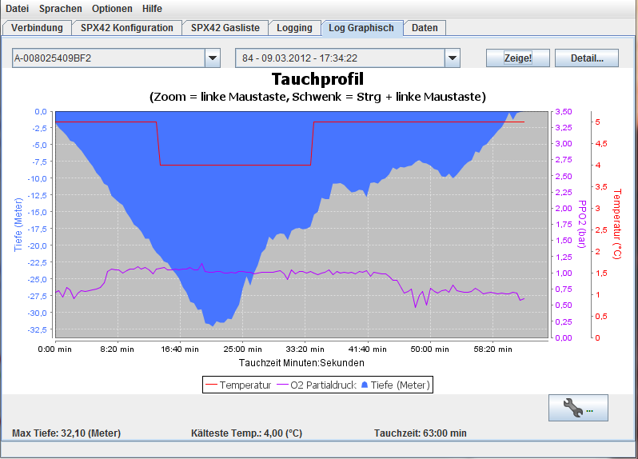

Übersicht
Im Tab "Log Graphisch" können die in der internen Datenbank gespeicherten
Tauchgprofile für eine erste Ansicht grafisch dargestellt werden. Weiterhin
kann für jedes Profil eine Notitz in der Datenbank gespeichert werden, die
auch später mit der Exportfunktion mit exportiert werden kann.
Übersicht Tab grafdische Darstellung
Für die grafische Anzeige der Daten wird eine Open Source Bibliothek mit dem
Namen "JFreeChart" www.jfree.org benutzt,
welche unter der GNU Lesser General Public Licence veröffentlicht wurde.
(Siehe Bibliotheken und Lizenzen)
zum Inhalt
Gerät für die Anzeige auswählen
Zunächst ist das Gerät, für welches Logdaten anzuzeigen sind auszuwählen.
Es wird, wenn mehrere Geräte in der Datenbank vorhanden sind, das aktuell
verbundene Gerät voreingestellt, ansonsten das Erste in der Datenbank gefundene
gerät.
Gerät auswählen (von welchem Daten gezeigt werden sollen)
Tauchgang/Profil auswählen
Wurde ein Gerät ausgewählt, wird die Liste mit verfügbaren Logs
(Tauchgängen/Profilen) des Gerätes gefüllt, sofern vorhanden. Es kann dann der
gewünschte Eintrag aus der herunterklappbaren Liste gewählt werden.
Log/Profil auswählen
Anzeige der Daten
Um nun die grafische Ansicht des Tauchganges anzuzeigen wir einfach der "Zeige!"
Button gedrückt, und es wir in etwa eine Ansicht wie diese gezeigt werden:

Log/Profil anzeigen
Zommen in die Zeitachse kann man mit dm Mausrad, oder mit der linken Maustaste indem
man einen (den zu vergrößernden ) Bereich mit gedrückter linker Maustaste
markiert. Den vergrößerten Bereich kann man nach links und recht schwenken, indem
man die STRG (Steuerungstaste) gedrückt hält, und den vergrößerten Ausschnitt
nach links oder rechts schiebt.
Eine Vergrößerung in der Tiefen/Druck/Temperaturachse ist so nicht vorgesehen.
Details der Anzeige
Um Detail der Logdaten anzuzeigen oder auszublenden kann der Button "Detail..."
geklickt werden. Es öffnet sich ein Dialog, der die Möglichkeit anbietet,
bestimmte Details ein- oder auszublenden
Details ein/Ausblenden
Nachdem durch aktivieren/deaktivieren der Haken an den Details die
Anzeigeeinstellungen gestgelegt wurden, kann mit "Anwenden" diese Einstellung
übernommen werden.
Bemerkungen zum Tauchgang/Profil
Zu jedem Tauchgang/Profil kann ein kurzer Text mit in der Datenbank
abgespeichert werden. Dazu genügt ein Klick auf den Button, der mit einem
Schraubenschlüsselsymbol gekennzeichnet ist
Bemerkungen zum Tacuhgang editieren
Auch hier speichert ein "Speichern.." die Bemerkungen in der Datenbank. Diese
werden bei einem Export auch mit exportiert und in der grafischen Ansicht
fortan angezeigt.
Bemerkungen zum Tauchgang
zum Inhalt
zum Inhalt